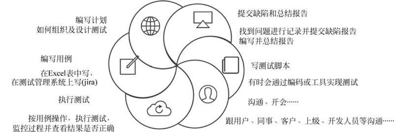

首页 > 编程笔记
pytest框架是什么？
框架是什么？其实就是别人写好的一些代码帮助我们做某些事情。一般会把重复工作通过代码的方式封装好，这样我们就可以调用，这些封装好的代码就是框架。
作为测试人员，平时做的最多的工作是什么？如图1所示。
执行测试和提交 Bug 这个过程是重复出现的。那么我们可以把整个执行的过程封装成一个框架，每次我们只需把测试用例提交，之后让它帮助我们进行一些用例的执行及管理。
提交 Bug 这个活动也是重复的，在提交报告的过程中，我们需要一些运行结果的依据，最好能够生成一个非常漂亮的报告供我们参考，那么这部分需要有相应的框架来帮助我们实现。
总结来讲，所有的重复工作，我们都可用框架的方式实现，所以需要自己亲自设计和编写脚本代码。
执行测试及提交精美测试报告这些任务可以由 pytest 和它的插件帮助我们完成。
测试框架的分类：
pytest 应用在自动化测试场合、单元自动化测试、API 自动化测试、Web/App 自动化测试等领域。我们可以使用 pytest 编写从简单到复杂的测试，即可以编写代码来测试 API、数据库、UI 等。
我们可以设想一下企业中实现 pytest 自动化测试执行之后的场景：开发人员在编写代码之后提交代码，然后我们便可以触发整个测试脚本的运行，运行之后，我们很快便可以得到测试的结果，那么可能当你还没有下班之前，测试结果便发到了你的邮箱，或者以短信的形式通知你，你需要把 Bug 改了才可以下班。
这种快速自动化测试出结果的方式最适合目前所需求的快速迭代，更解决了领导希望通过快速的反馈做下一步决策的问题。
pypi 网址：https://pypi.org/project/pytest/
GitHub 网址：https://github.com/pytest-dev/pytest/
测试框架能解决什么问题？
在整个测试的过程当中，通常流程化的东西包括编写测试计划、编写测试用例、执行测试用例、提交 Bug、编写测试报告，还有沟通和开会等。作为测试人员，平时做的最多的工作是什么？如图1所示。

图1：测试人员平时重复的工作
图1：测试人员平时重复的工作
执行测试和提交 Bug 这个过程是重复出现的。那么我们可以把整个执行的过程封装成一个框架，每次我们只需把测试用例提交，之后让它帮助我们进行一些用例的执行及管理。
提交 Bug 这个活动也是重复的，在提交报告的过程中，我们需要一些运行结果的依据，最好能够生成一个非常漂亮的报告供我们参考，那么这部分需要有相应的框架来帮助我们实现。
总结来讲，所有的重复工作，我们都可用框架的方式实现，所以需要自己亲自设计和编写脚本代码。
执行测试及提交精美测试报告这些任务可以由 pytest 和它的插件帮助我们完成。
测试框架的分类：
- 进行测试执行操作：Selenium、Appium、Requests；
- 测试用例管理及执行：pytest、Unittest、Nose；
- 测试报告：Allure；
- 数据驱动：DDT；
- 环境部署及持续集成：Docker、Jenkins。
pytest 是什么？
pytest 是一个基于 Python 的测试框架，用于编写和执行测试代码。pytest 应用在自动化测试场合、单元自动化测试、API 自动化测试、Web/App 自动化测试等领域。我们可以使用 pytest 编写从简单到复杂的测试，即可以编写代码来测试 API、数据库、UI 等。
我们可以设想一下企业中实现 pytest 自动化测试执行之后的场景：开发人员在编写代码之后提交代码，然后我们便可以触发整个测试脚本的运行，运行之后，我们很快便可以得到测试的结果，那么可能当你还没有下班之前，测试结果便发到了你的邮箱，或者以短信的形式通知你，你需要把 Bug 改了才可以下班。
这种快速自动化测试出结果的方式最适合目前所需求的快速迭代，更解决了领导希望通过快速的反馈做下一步决策的问题。
pytest 的特点和优点
pytest 自动化测试框架会随着 DevOps 的落地实施而变得会越来越流行。它之所以流行，也是因为有很多的优点：- pytest 是免费和开源的；
- pytest 有活跃的社区和维护组织；
- pytest 的语法简单灵活，容易上手；
- 支持参数化，也就是支持数据驱动；
- 支持测试用例的 skip 和 xfail 处理；
- pytest 可以自动检测测试文件和测试功能；
- pytest 允许我们运行整个测试套件的一部分；
- 能够支持简单的单元测试和复杂的功能测试；
- pytest 是免费和开源的；
- pytest 有活跃的社区和维护组织；
- pytest 的语法简单灵活，容易上手；
- 支持参数化，也就是支持数据驱动；
- 支持测试用例的 skip 和 xfail 处理；
- pytest 可以自动检测测试文件和测试功能；
- pytest 允许我们运行整个测试套件的一部分；
-
能够支持简单的单元测试和复杂的功能测试；
注：可以与 Selenium/Appium 等一起进行 UI 自动化测试，也可以与 Requests 一起进行接口自动化测试。
- 可以很好地和 Jenkins 集成；
- pytest 具有很多第三方插件，并且可以自定义扩展；
- pytest-allure 可以生成完美的 HTML 测试报告；
- pytest 可以并行运行多个测试，从而减少测试套件的执行时间 pytest-xdist；
- 与以前的测试框架兼容，可执行由 Unittest、Nose 所写的测试脚本。
pytest 的官网及资料地址
pytest 官网及帮助文档网址：https://docs.pytest.org/en/latest/pypi 网址：https://pypi.org/project/pytest/
GitHub 网址：https://github.com/pytest-dev/pytest/
关注公众号「站长严长生」，在手机上阅读所有教程，随时随地都能学习。内含一款搜索神器，免费下载全网书籍和视频。

微信扫码关注公众号